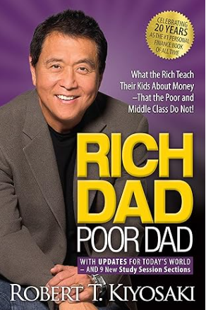

Title - Author: Rich Dad Poor Dad - Robert T. Kiyosaki
The contents of the book is not my reasoning for this for choosing this book as my favorite. However, it provided me enough insight to help me strengthen my knowledge in finance by motivating me to research much more than I would've been taught. You can buy the book here.
This song brings back to my old days of playing runescape as a kid. This is a song is not purchasable. It's video game track.
Name: Inception
It was ok.